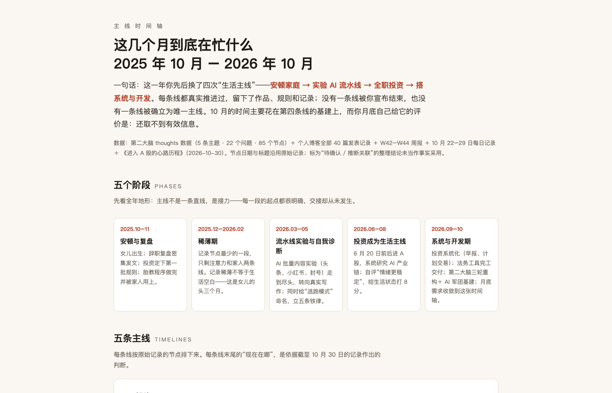
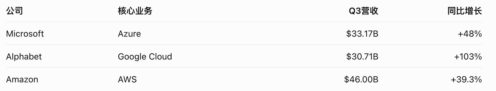

交付堆了一桌，有效信息却仍够不着手。本周真正问清楚的，是第二大脑要什么；真正卡住的，是一句「But how？」。
一件具体的事
成都，体育场里人声鼎沸。灯光暗下去，又骤然亮起。许嵩走上舞台，第一首是《雅俗共赏》。
他开口的那一刻，我忽然泪崩。
并不是某一句歌词勾起了具体回忆。是这个声音太熟——不是这首歌有多少回忆，是这个充满辨识度的声音，陪伴我从青春期一直走到现在。熟悉到它一响起，散落在十几年前的日子忽然有了回声。
我想起很多年前的一个大雪天。那时候他刚发行第二张专辑《寻雾启示》，我从论坛上买了这张专辑，专门去办了个 U 盾。收到快递那天大雪纷飞，拆开看见亲笔签名，心里的激动到现在都还记得。后来去北京看过《苏格拉没有底》。无数次说要去看一场演唱会，又无数次把念头留给下一次。生活换过章节，歌声还在。直到成都这个夜晚：「十几年前，我曾满心欢喜地等它抵达。」「十几年后，我终于等到了这场演唱会。」
同周还有另一件同样具体、却更冷的事。我对着第二大脑刚做好的一版样式，说得很直白：要的是功能，不是视觉——「因为我不能从中获取任何有效的信息」。漂亮界面到了手里，仍像一件 fancy 的空壳。好看没用，是因为看不见自己。
这件事让我看见了什么
当晚把问题抬高一层：认真想想，做第二大脑究竟是为了什么。和助手聊过一轮，仍觉得没有思路——直到用途从散落的愿望，收成几条能摸到的场景。投资判断时能调出依据；迷茫时看见最近在做什么、当时为什么；还能找回旧想法并串起来。优先落在中间那条：「我最近在忙什么、当时为什么这么做」——时机就是感到混乱的时候。首屏也清楚了：几条主线的时间轴，看每条从哪开始、现在在哪。
周三用 Obsidian Canvas，觉得真适合这种脑子里同时跑多个主题的状态：idea 可以挂在主题词下，也能跨主题连线。工程侧 Almanac 停推，方向改成生活主线时间轴。预览做出来之后，我认可道理，追问却停在一句「But how？」。规格和日用都还没落地——方向对了，用法还没摸到。旁线可以堆很多，主线仍是：迷茫时，系统能不能把「在忙什么／为什么」递到手边——不是又做完一版界面。

演唱会那晚把这两条线钉在一起。值得接住的，不只是项目状态与交付回执，还有这些跨年的主线——情绪、时间、和某个雪天里的少年。第二大脑若只装 KPI，就把真正要找回来的自己漏掉了；系统若变成另一份工作，也背离了「迷茫时递到手边」的初衷。有效信息大于视觉完成度。这不是审美口号，是这周亲手摸到的边界：样式做完仍觉得空，缺的不是皮肤，是「最近在忙什么、当时为什么」。
同周写作也说清了一层。不脱离投资主线，让更多信息进大脑，媒介是写作；检验标准是自己有没有真懂，而不是只完成内容生产。所以第一步收敛成——先做一条讲给自己听的动画，看能不能帮自己理解概念。输入输出的链条逐渐清晰：读新闻 → 写作加深理解 → 发布 → 再考虑视频。最关键的检验仍是自己有没有真懂。这和「But how？」是同一类缺口：道理到了手边，用法还没长进日子里。
投资侧没有本周成交。有的是一次对照清晰的观察：谷歌财报后大跌，记下资本开支大于经营现金流、自由现金流转负且比上季更低，广告也不及预期；微软则因云业务增速超预期、现金流强而大涨——像在证实「投入可以变成回报」。同一周并排放，比单独盯涨跌更能逼出那个问题：开支有没有换成可验证的回报。想把美股整体走势、强弱板块与原因好好盘一遍，却承认「现在好像无法完成了」。对照可以先于动作，但不能代替把观察写完——观察停在半途，等于没观察完。

三件事其实在说同一件事：投入要换成可验证的回报。第二大脑的样式、写作的发布节奏、财报旁的涨跌，都是投入；有效信息、真懂、写完的三问，才是回报。这周把「要什么」问清楚了；「怎么用」还欠着第一版答案。
一个没想透的问题
时间轴在迷茫时究竟怎么用？
最小可用是什么——打开就看见两三条主线的起止，还是要能点进「当时为什么」的一两句原话？怎样试几天才算「用起来」，而不是又做完一版预览？「But how？」要有第一版答案，否则用途问清楚了也只是停在纸上。演唱会接回来的那条跨年主线，又该以什么形态进时间轴，才不至于只剩一篇回忆；美股那三问何时补完，下一周回看时，又用什么把「观察」钉成可验证的判断。